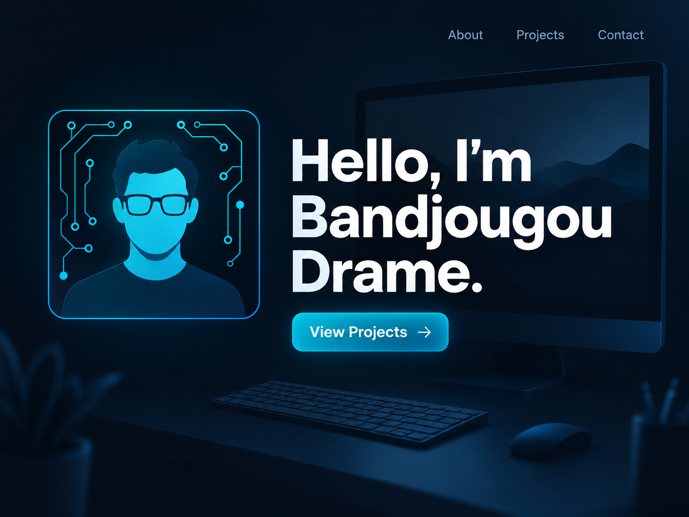

Networking
- Cisco Packet Tracer
- IP Addressing
- VLANs
- SSH
- ACLs
Hello, I'm
Informatics Student · Aspiring Cybersecurity Professional
Informatics student at IU Indianapolis building hands-on skills in cybersecurity, networking, and IT support.
I am an Informatics student at IU Indianapolis interested in cybersecurity, networking, and IT support. Through hands-on projects in Cisco Packet Tracer and Splunk, I am learning how to configure networks and monitor security events. I enjoy solving technical problems and building practical skills for a career in IT.
January 2026 – August 2026
Ingram Micro · Plainfield, IN
Processed 100–130 laptops and desktops daily. Configured BIOS/UEFI settings, performed secure data erasure with Blancco, tested devices, and replaced hardware components. Trained four employees on processing, documentation, and safety procedures.
March 2025 – August 2025
uBreakiFix by Asurion · Indianapolis, IN
Diagnosed and repaired smartphones, tablets, laptops, and computers. Replaced screens and internal components, tested completed repairs, and explained technical issues to customers. Maintained service records and parts inventory.
Currently pursuing a Bachelor of Science in Informatics.
I enjoy playing football and working out. I also like learning about technology.

I built a responsive portfolio using HTML and CSS to showcase my networking and cybersecurity projects. It includes navigation links, a project grid, and reusable technology badges.
I built a network lab in Cisco Packet Tracer to practice IP addressing, VLANs, and trunk connections. I also configured SSH for secure remote access and access control lists to control network traffic.
I used Splunk to analyze simulated security logs and build a dashboard showing failed login attempts and security event types. I investigated repeated failed logins followed by a successful login and privilege changes, then documented the findings and recommended responses in an incident report.
Have a question or an opportunity to share? Send me a message using the form below.
Connect on LinkedIn